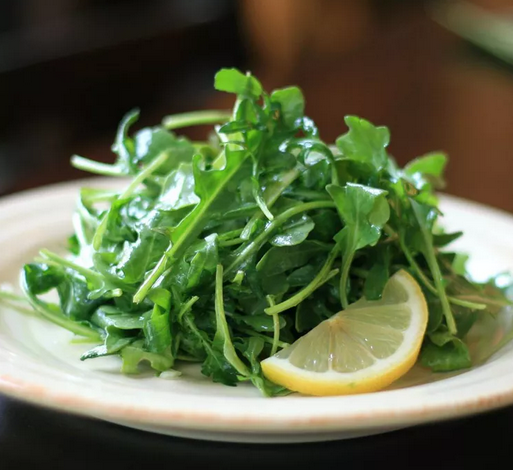

Sandy's Simple Spring Lettuce Salad
Homepage
Recipe source

Sandy's Simple Spring Lettuce Salad
Lemon juice combines with mild rice vinegar in a dressing that's both sprightly and slightly sweet to dress young, tender lettuces.
Ingredients
- 1 shallot, finely chopped
- 1 1/2 teaspoons honey
- 1 teaspoon Dijon mustard
- 1/4 teaspoon salt
- 1/4 cup extra-virgin olive oil
- 2 tablespoons fresh lemon juice
- 2 tablespoons rice vinegar
- 16 cups arugula
Steps
-
Combine shallot, honey, mustard, and salt in a jar with a lid; add olive oil, lemon juice, and vinegar. Cover jar with lid and shake until dressing is thickened.
-
Trim dry ends off of asparagus. If spears are thick, peel them lightly with a vegetable peeler.
-
Place arugula in a bowl and drizzle dressing over greens; toss to coat.